عظم الفخذThe Femur bone
عملي · م02 · 4.9 دقيقةأقسام المحاضرة (9)
- عظم الفخذ: نظرة عامةThe Femur bone
- الطرف القريب لعظم الفخذProximal Femur
- جسم عظم الفخذFemoral Shaft
- الطرف البعيد لعظم الفخذDistal Femur
- المظاهر الشعاعية لعظم الفخذRadiological features of femur bone
- تعظّم عظم الفخذOssification of the Femur
- كسور الطرف القريب لعظم الفخذ (كسور الورك)Types of Femoral Fractures – Proximal Femur / Hip Fractures
- أنواع كسور جسم عظم الفخذTypes of femoral shaft-fractures
- الأنواع الرئيسة لكسور الطرف البعيد لعظم الفخذThe Main Types of Distal Femoral Fractures
عظم الفخذ: نظرة عامةThe Femur bone
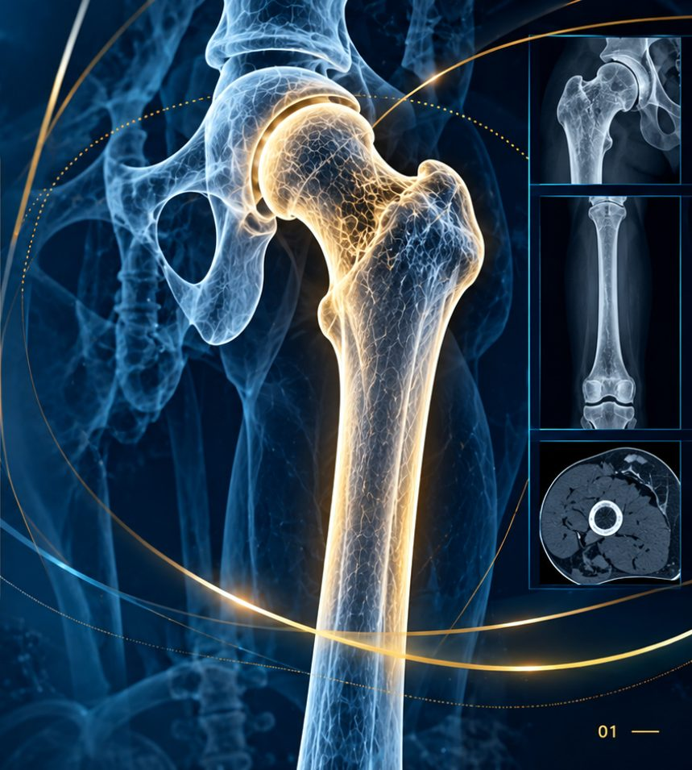
عظم الفخذFEMUR
The femur is the only bone in the thigh and the longest bone in the body.
عظم الفخذ هو العظم الوحيد في الفخذ، وهو أطول عظم في الجسم.
It acts as the site of origin and attachment of many muscles and ligaments.
ويعمل موضعاً لمنشأ كثير من العضلات والأربطة وارتكازها.
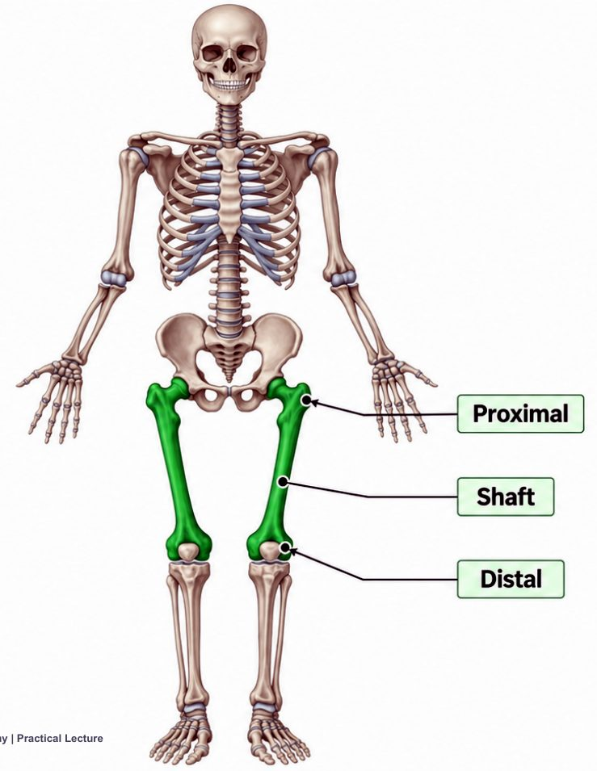
الطرف القريب لعظم الفخذProximal Femur
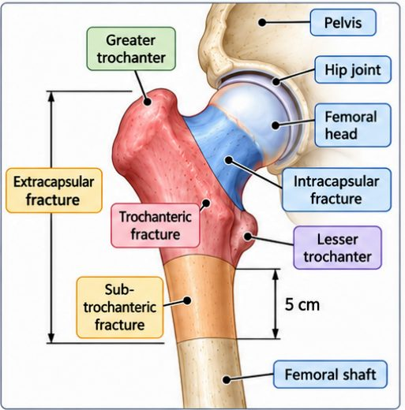
كسور الطرف القريب لعظم الفخذProximal femur fractures
Intracapsular fractures involve the femoral neck, while extracapsular fractures include trochanteric and subtrochanteric fractures.
الكسور داخل المحفظة تشمل عنق عظم الفخذ، بينما الكسور خارج المحفظة تشمل كسور المدوّرين والكسور تحت المدوّرين.
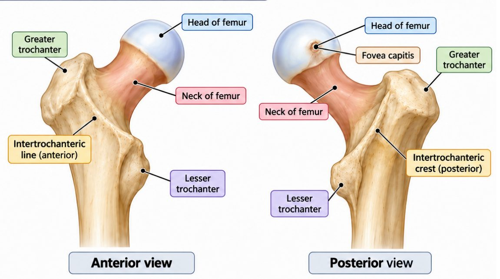
معلومات أساسيةKey Information
- • It consists of a head and neck, and two bony processes: the greater and lesser trochanters.يتكوّن من رأس وعنق، ونتوءين عظميين: المدوّر الكبير والمدوّر الصغير.
- • The intertrochanteric line is anterior, and the intertrochanteric crest is posterior.الخط بين المدوّرين أمامي، والعرف بين المدوّرين خلفي.
- • The head articulates with the acetabulum to form the hip joint.يتمفصل الرأس مع الحُقّ ليكوّن مفصل الورك.
- • The head is covered by articular cartilage except at the fovea, where the ligamentum teres attaches.الرأس مغطّى بالغضروف المفصلي ما عدا النُّقرة، حيث يرتكز الرباط المدوّر.
الطرف القريب لعظم الفخذ: أهم النقاط التشريحية والسريريةPROXIMAL FEMUR – Key Anatomy and Clinical Points
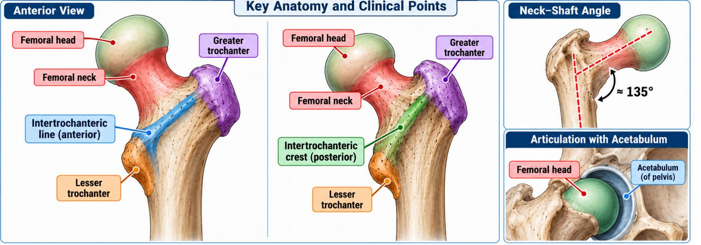
النقاط الأساسيةKey Points
جسم عظم الفخذFemoral Shaft
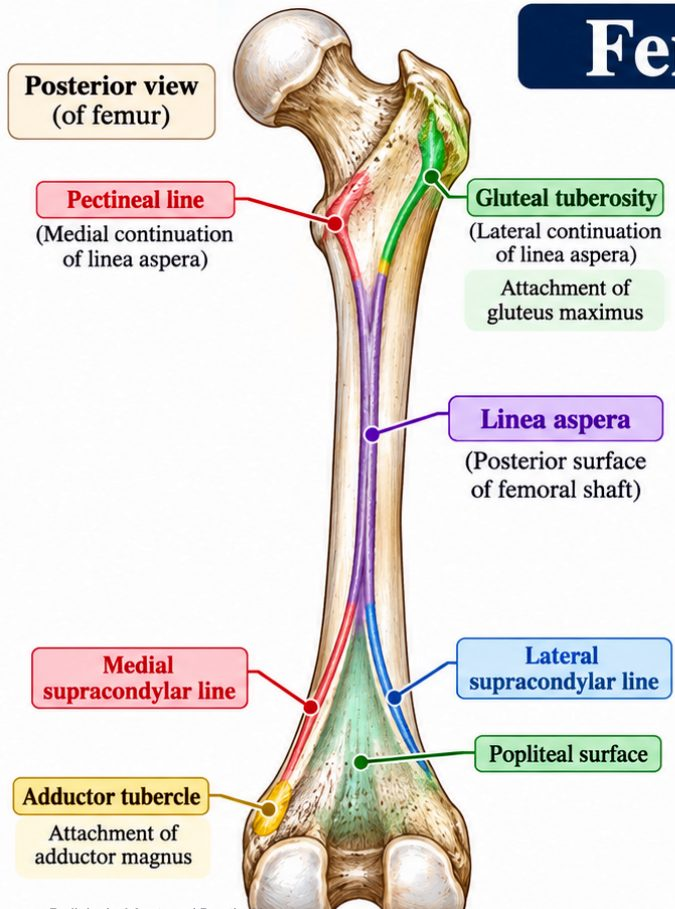
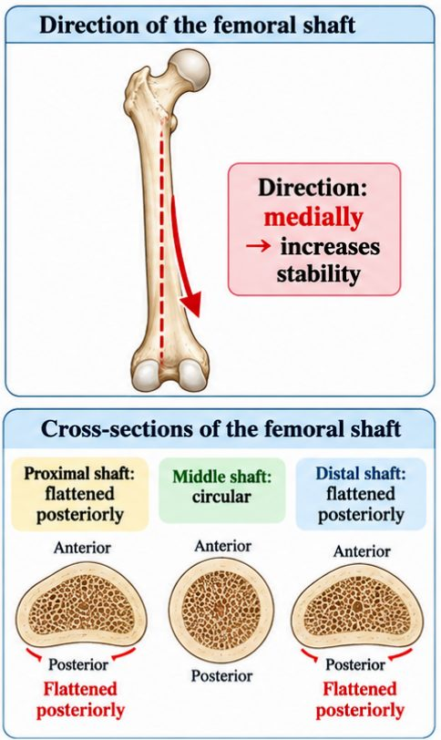
اتجاه جسم عظم الفخذDirection of the femoral shaft
Direction: medially → increases stability
الاتجاه: نحو الإنسي ← يزيد الثبات
مقاطع عرضية لجسم عظم الفخذCross-sections of the femoral shaft
- • Proximal shaft: flattened posteriorlyالجزء القريب من الجسم: مسطّح من الخلف
- • Middle shaft: circularالجزء الأوسط من الجسم: دائري
- • Distal shaft: flattened posteriorlyالجزء البعيد من الجسم: مسطّح من الخلف
النقاط الأساسية: جسم عظم الفخذKey Points – Femoral Shaft
- • Direction: Medially → increases stability.الاتجاه: نحو الإنسي ← يزيد الثبات.
- • Linea aspera: Posterior surface of femoral shaft.الخط الخشن: على السطح الخلفي لجسم عظم الفخذ.
- • Proximally: Medial → Pectineal line.في الأعلى (قريباً): الامتداد الإنسي ← الخط المشطي.
- • Proximally: Lateral → Gluteal tuberosity (Gluteus maximus attachment).في الأعلى (قريباً): الامتداد الوحشي ← الحدبة الألوية (مرتكز العضلة الألوية الكبرى).
- • Distally: Linea aspera → Medial & lateral supracondylar lines.في الأسفل (بعيداً): الخط الخشن ← الخطان فوق اللقميّان الإنسي والوحشي.
- • Between them → Popliteal surface.بينهما ← السطح المأبضي.
- • Medial supracondylar line → Adductor tubercle (Adductor magnus attachment).الخط فوق اللقمي الإنسي ← الحديبة المقرِّبة (مرتكز العضلة المقرِّبة الكبرى).
الطرف البعيد لعظم الفخذDistal Femur
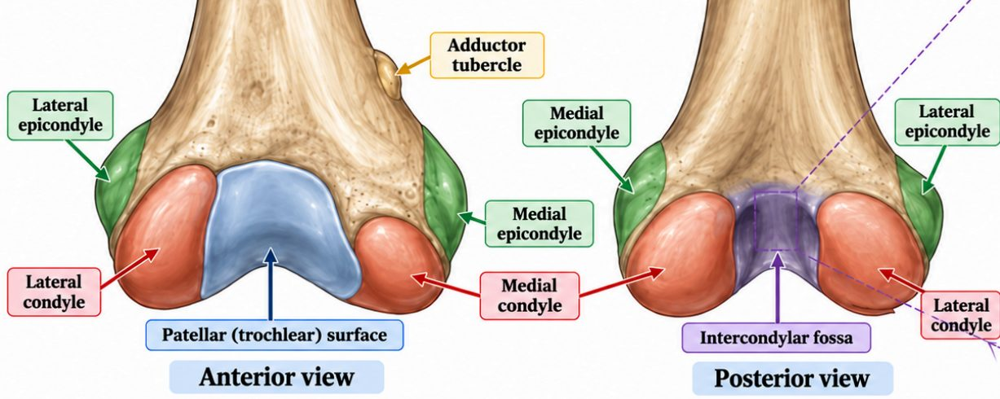
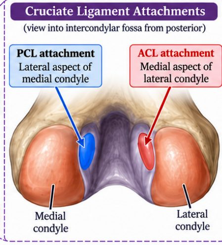
أهم النقاط التشريحية والسريريةKey Anatomy & Clinical Points
- • Medial & lateral condyles: Articulate with tibia and patella → Knee joint.اللقمتان الإنسية والوحشية: تتمفصلان مع الظنبوب والرضفة ← مفصل الركبة.
- • Lateral condyle: More prominent → prevents lateral patellar dislocation.اللقمة الوحشية: أكثر بروزاً ← تمنع خلع الرضفة نحو الوحشي.
- • Medial & lateral epicondyles: Non-articular bony elevations; medial is larger.اللقيمتان الإنسية والوحشية: بروزان عظميان غير مفصليين؛ والإنسية أكبر.
- • Intercondylar fossa: Posteriorly, between the two condyles.الحفرة بين اللقمتين: في الخلف، بين اللقمتين.
- • Cruciate Ligaments Attachments:مرتكزات الرباطين الصليبيين:
- • ACL → Medial aspect of lateral condyle.الرباط الصليبي الأمامي ACL ← الجانب الإنسي للقمة الوحشية.
- • PCL → Lateral aspect of medial condyle.الرباط الصليبي الخلفي PCL ← الجانب الوحشي للقمة الإنسية.
- • Remember: ACL = Lateral condyle / PCL = Medial condyle.تذكّر: ACL = اللقمة الوحشية / PCL = اللقمة الإنسية.
المظاهر الشعاعية لعظم الفخذRadiological features of femur bone
الإسقاط الأمامي الخلفي (للطرف القريب لعظم الفخذ)AP Projection (for proximal femur)
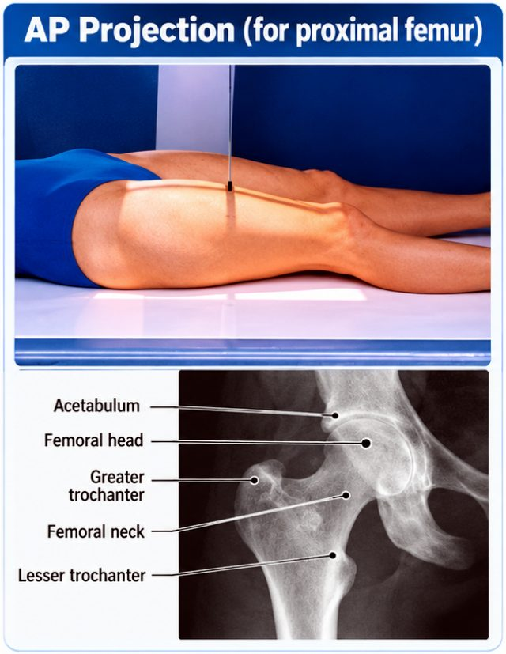
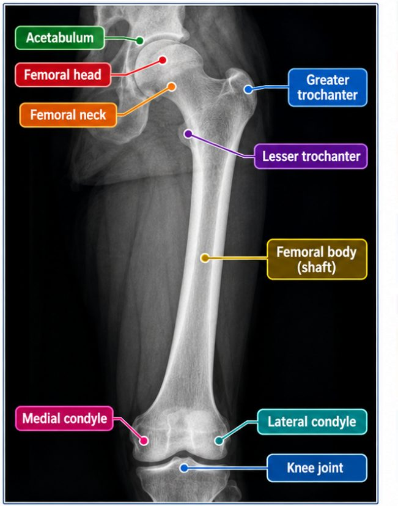
صورة الورك الشعاعية: تشريح الحُقّ والطرف القريب لعظم الفخذHip Radiograph: Acetabulum and Proximal Femur Anatomy
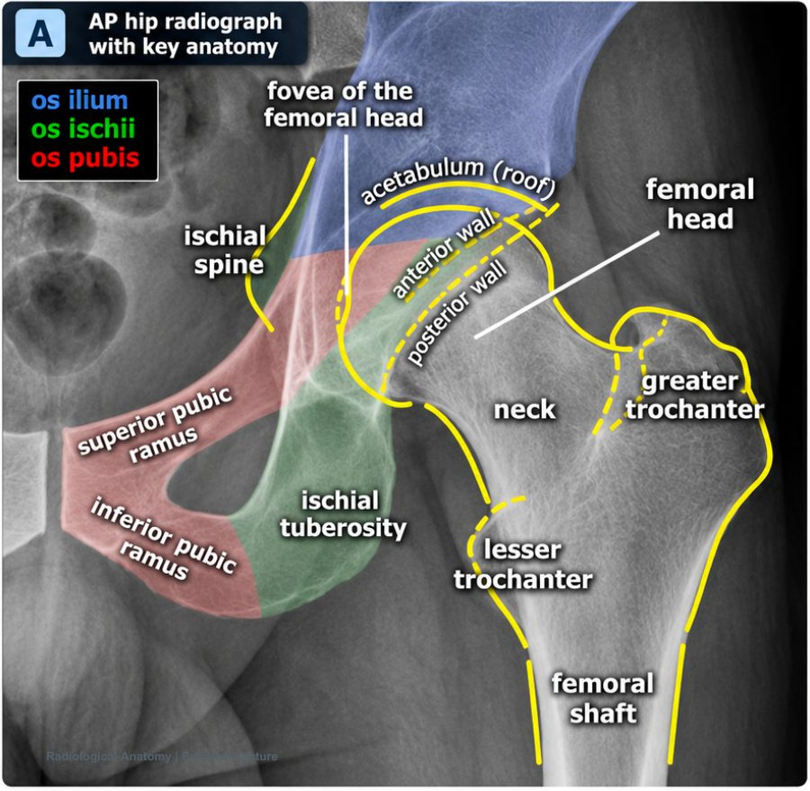
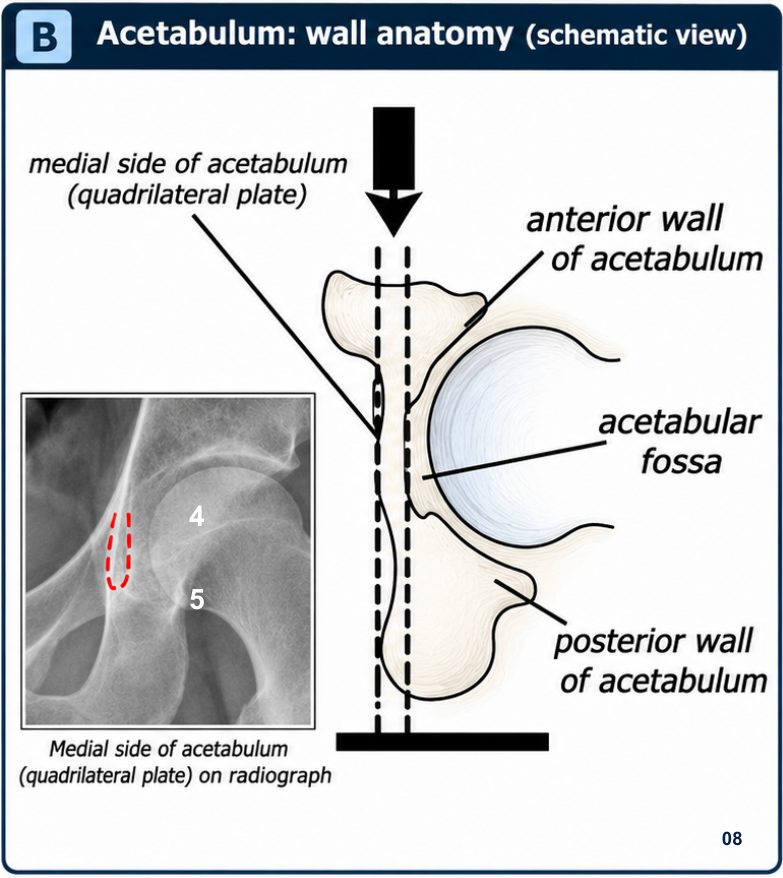
تشريح الركبة في الصورة الشعاعيةKnee X-Ray Anatomy
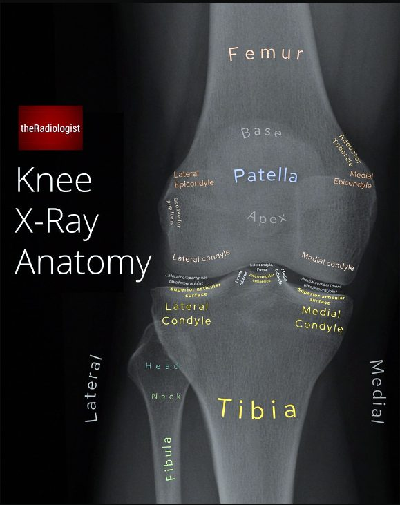
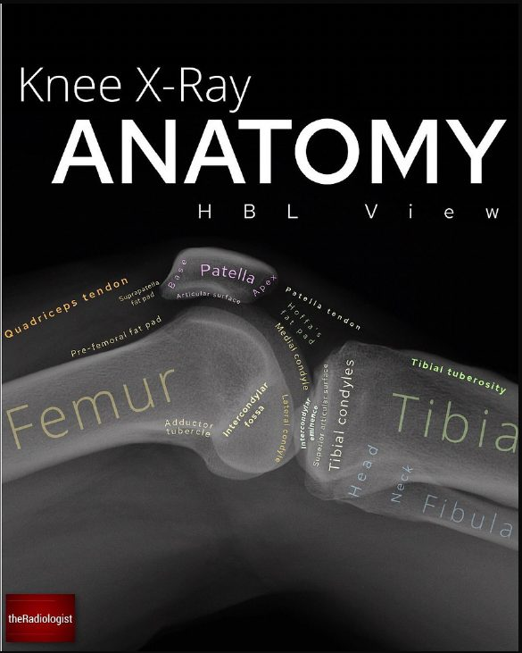
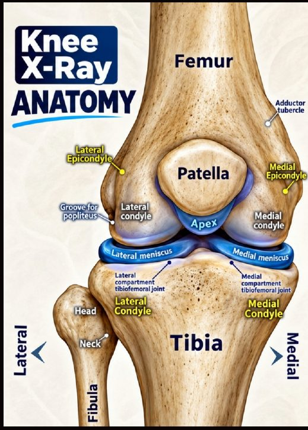
تعظّم عظم الفخذOssification of the Femur
Sequential development of ossification centers from fetal life to adulthood
التطوّر المتتابع لمراكز التعظّم من الحياة الجنينية إلى البلوغ
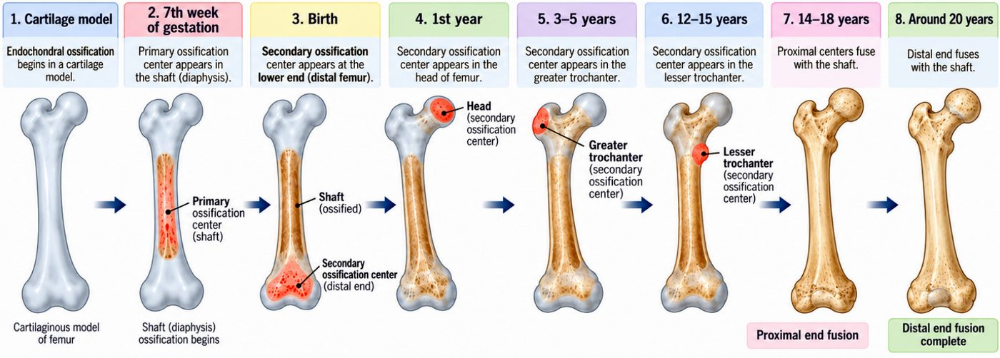
- • 1. Cartilage model – Endochondral ossification begins in a cartilage model.1. النموذج الغضروفي: يبدأ التعظّم داخل الغضروف في نموذج غضروفي.
- • 2. 7th week of gestation – Primary ossification center appears in the shaft (diaphysis).2. الأسبوع السابع من الحمل: يظهر مركز التعظّم الأولي في جسم العظم.
- • 3. Birth – Secondary ossification center appears at the lower end (distal femur).3. الولادة: يظهر مركز تعظّم ثانوي في الطرف السفلي (الطرف البعيد لعظم الفخذ).
- • 4. 1st year – Secondary ossification center appears in the head of femur.4. السنة الأولى: يظهر مركز تعظّم ثانوي في رأس عظم الفخذ.
- • 5. 3–5 years – Secondary ossification center appears in the greater trochanter.5. من 3 إلى 5 سنوات: يظهر مركز تعظّم ثانوي في المدوّر الكبير.
- • 6. 12–15 years – Secondary ossification center appears in the lesser trochanter.6. من 12 إلى 15 سنة: يظهر مركز تعظّم ثانوي في المدوّر الصغير.
- • 7. 14–18 years – Proximal centers fuse with the shaft.7. من 14 إلى 18 سنة: تلتحم المراكز القريبة مع الجسم.
- • 8. Around 20 years – Distal end fuses with the shaft.8. نحو 20 سنة: يلتحم الطرف البعيد مع الجسم.
ملخّص أهم الحقائقSummary of Key Facts
كسور الطرف القريب لعظم الفخذ (كسور الورك)Types of Femoral Fractures – Proximal Femur / Hip Fractures
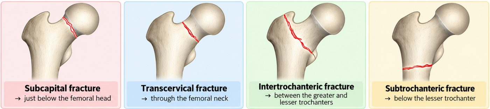
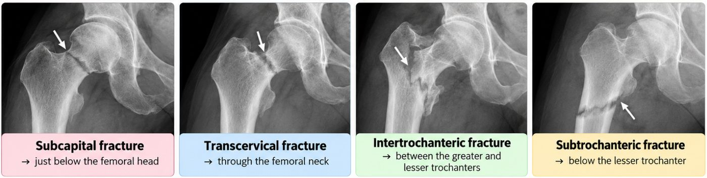
أنواع كسور جسم عظم الفخذTypes of femoral shaft-fractures
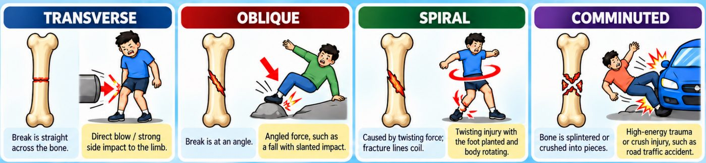
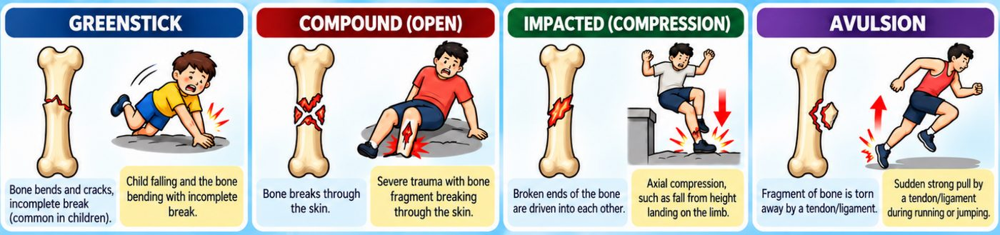
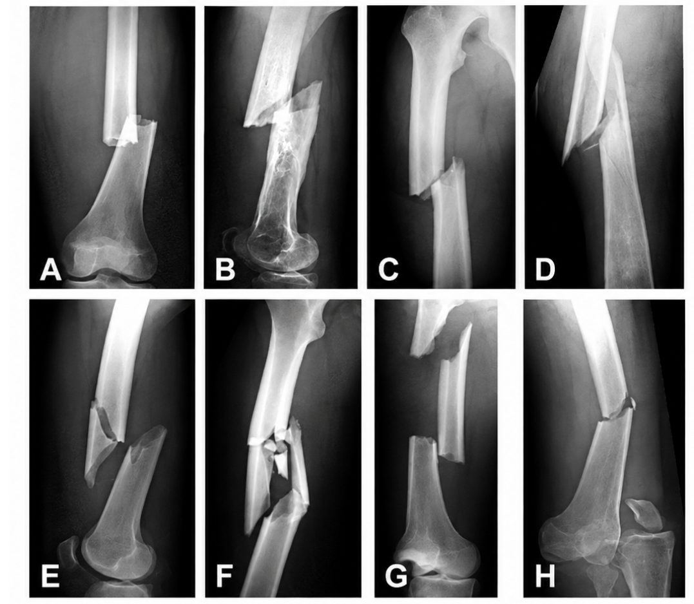
- • A : simple transverse fracture with minimal comminutionA: كسر مستعرض بسيط مع تفتّت قليل
- • B: simple oblique- transverse fracture without comminutionB: كسر مائل مستعرض بسيط بلا تفتّت
- • C: simple oblique fractureC: كسر مائل بسيط
- • D: A slightly comminuted fractureD: كسر مفتّت قليلاً
- • E: spiral fracture with a bending wedge (butterfly fragment)E: كسر حلزوني مع إسفين انثناء (قطعة الفراشة)
- • F: comminuted irregular complex fractureF: كسر مفتّت معقّد غير منتظم
- • G: segmental fractureG: كسر قِطَعي
- • H: An oblique fracture of the middle third of the femoral with minimal comminution and a dislocation of the kneeH: كسر مائل في الثلث الأوسط من عظم الفخذ مع تفتّت قليل وخلع في الركبة
الأنواع الرئيسة لكسور الطرف البعيد لعظم الفخذThe Main Types of Distal Femoral Fractures
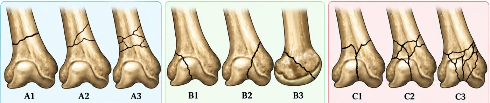
النوع A: خارج المفصلType A: Extra-articular
النوع B: مفصلي جزئيType B: Partial articular
النوع C: داخل المفصلType C: Intra-articular
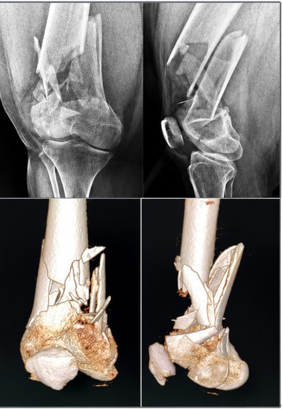
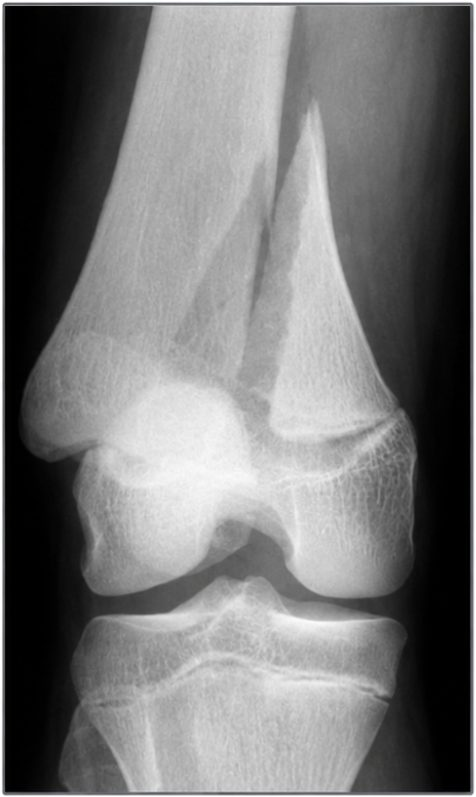
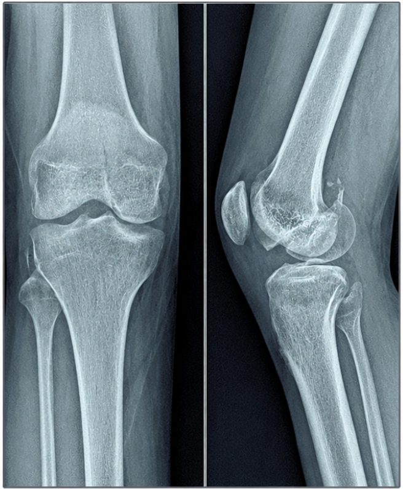
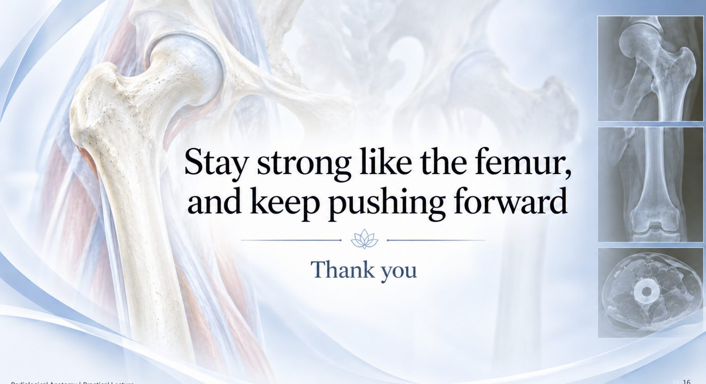
Stay strong like the femur, and keep pushing forward
كن قوياً مثل عظم الفخذ، واستمر في التقدّم
Thank you
شكراً لكم
المحاضرة مسموعة
نص الأستاذ بالإنكليزي مثل الأصل · 4.9 دقيقة. اضغط أي جملة تسمعها، أو مصطلح منقّط تسمع لفظه ومعناه.
The Femur boneعظم الفخذ: نظرة عامة
The Femur bone
FEMUR
The femur is the only bone in the thigh and the longest bone in the body.
It acts as the site of origin and attachment of many muscles and ligaments.
Proximal Femurالطرف القريب لعظم الفخذ
Proximal Femur
Proximal femur fractures
Intracapsular fractures involve the femoral neck, while extracapsular fractures include trochanteric and subtrochanteric fractures.
Key Information
It consists of a head and neck, and two bony processes: the greater and lesser trochanters.
The intertrochanteric line is anterior, and the intertrochanteric crest is posterior.
The head articulates with the acetabulum to form the hip joint.
The head is covered by articular cartilage except at the fovea, where the ligamentum teres attaches.
PROXIMAL FEMUR – Key Anatomy and Clinical Points
Key Points
Femoral Shaftجسم عظم الفخذ
Femoral Shaft
Direction of the femoral shaft
Direction: medially → increases stability
Cross-sections of the femoral shaft
Proximal shaft: flattened posteriorly
Middle shaft: circular
Distal shaft: flattened posteriorly
Key Points – Femoral Shaft
Direction: Medially → increases stability.
Linea aspera: Posterior surface of femoral shaft.
Proximally: Medial → Pectineal line.
Proximally: Lateral → Gluteal tuberosity (Gluteus maximus attachment).
Distally: Linea aspera → Medial & lateral supracondylar lines.
Between them → Popliteal surface.
Medial supracondylar line → Adductor tubercle (Adductor magnus attachment).
Distal Femurالطرف البعيد لعظم الفخذ
Distal Femur
Key Anatomy & Clinical Points
Medial & lateral condyles: Articulate with tibia and patella → Knee joint.
Lateral condyle: More prominent → prevents lateral patellar dislocation.
Medial & lateral epicondyles: Non-articular bony elevations; medial is larger.
Intercondylar fossa: Posteriorly, between the two condyles.
Cruciate Ligaments Attachments:
ACL → Medial aspect of lateral condyle.
PCL → Lateral aspect of medial condyle.
Remember: ACL = Lateral condyle / PCL = Medial condyle.
Radiological features of femur boneالمظاهر الشعاعية لعظم الفخذ
Radiological features of femur bone
AP Projection (for proximal femur)
Hip Radiograph: Acetabulum and Proximal Femur Anatomy
Knee X-Ray Anatomy
Ossification of the Femurتعظّم عظم الفخذ
Ossification of the Femur
Sequential development of ossification centers from fetal life to adulthood
1. Cartilage model – Endochondral ossification begins in a cartilage model.
2. 7th week of gestation – Primary ossification center appears in the shaft (diaphysis).
3. Birth – Secondary ossification center appears at the lower end (distal femur).
4. 1st year – Secondary ossification center appears in the head of femur.
5. 3–5 years – Secondary ossification center appears in the greater trochanter.
6. 12–15 years – Secondary ossification center appears in the lesser trochanter.
7. 14–18 years – Proximal centers fuse with the shaft.
8. Around 20 years – Distal end fuses with the shaft.
Summary of Key Facts
Types of Femoral Fractures – Proximal Femur / Hip Fracturesكسور الطرف القريب لعظم الفخذ (كسور الورك)
Types of Femoral Fractures – Proximal Femur / Hip Fractures
Types of femoral shaft-fracturesأنواع كسور جسم عظم الفخذ
Types of femoral shaft-fractures
A : simple transverse fracture with minimal comminution
B: simple oblique- transverse fracture without comminution
C: simple oblique fracture
D: A slightly comminuted fracture
E: spiral fracture with a bending wedge (butterfly fragment)
F: comminuted irregular complex fracture
G: segmental fracture
H: An oblique fracture of the middle third of the femoral with minimal comminution and a dislocation of the knee
The Main Types of Distal Femoral Fracturesالأنواع الرئيسة لكسور الطرف البعيد لعظم الفخذ
The Main Types of Distal Femoral Fractures
Type A: Extra-articular
Type B: Partial articular
Type C: Intra-articular
Stay strong like the femur, and keep pushing forward
Thank you
40 سؤال من نص المحاضرة، ويّا «ليش صح» بعد كل جواب.
ابدأ الاختباراضغط أي مصطلح منقّط تسمع لفظه ومعناه.
PDF ثنائي اللغة: نص الأستاذ + الترجمة + الخلاصة + الأسئلة · 3.1 MB
تحميل الملف